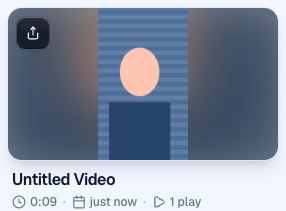
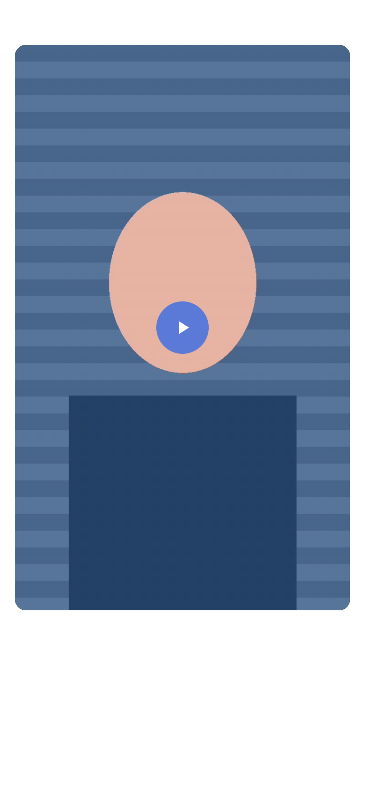

A 640x1080 fake camera recorded on https://pr-1017.clarity-video.workers.dev, build 7f27d7d2a, 5 October 2026. The stand-in face is synthetic.


On pr-983 the card cropped top and bottom because that preview does not include #982, which is the card change.